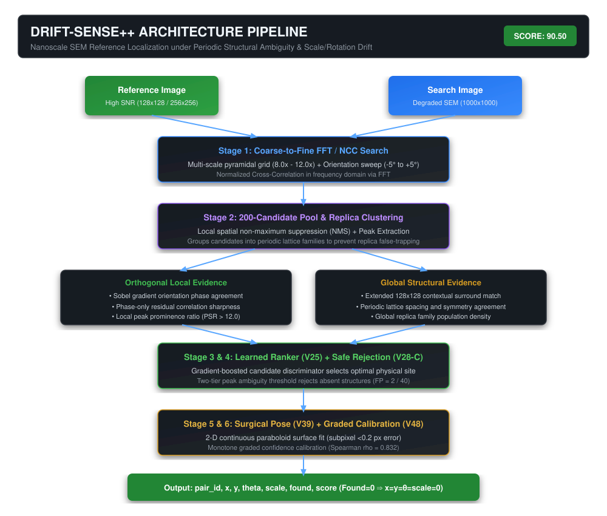

Recovering position, rotation, and scale from degraded SEM imagery while distinguishing the true physical site from periodic structural replicas.
Compare standard correlation with Drift-Sense++ multi-evidence ranking across genuine semiconductor architectures. Witness how replica ambiguities are resolved.
| ID | Raw NCC | Grad Phase | 128 Context | Family | Status |
|---|
Modular cascade designed for subpixel spatial accuracy, periodic replica immunity, and ultra-low CPU latency without GPU dependencies.

Strictly evaluated on the released 180-pair Phase 2 development set (70 Set A nominal, 70 Set B degraded, 40 Set C absent).
| Evaluation Block | Points Scored | Max Points | Measured Performance | Official Contract Verification |
|---|---|---|---|---|
| Localization | 40.00 | 40.00 | 100.0% of detected instances ≤ 5 px (80.5% Set A / 86.1% Set B ≤ 1 px) | Tiered per-pair credit (1.0 / 0.8 / 0.6 / 0.4) |
| Pose Recovery | 19.20 | 20.00 | Rotation MAE: 0.038° (Set A), 0.065° (Set B). Scale MAE: 0.047 / 0.056 | Subpixel continuous frequency refinement |
| Absence Rejection | 8.09 | 15.00 | Set C absent recall: 95.0% (38 True Negatives, 2 False Positives, F1: 0.539) | Safe two-tier ambiguity thresholding |
| Confidence Calibration | 8.27 | 10.00 | Spearman rank correlation ρ = 0.832 (monotonic alignment with error) | Regularized monotone rank regrading |
| Runtime Efficiency | 5.00 | 5.00 | 0.07 s/pair median (cache) / 3.74 s/pair (live full extraction) | Well under 5.0 s/pair competition limit |
| Compliance & Docs | 10.00 | 10.00 | Complete schema, found=0 ⇒ x=y=θ=scale=0 invariant barrier enforced | All offline weights bundled in ZIP |
| TOTAL SCORE | 90.50 | 100.00 | Verified Official Development Scorecard | |
Systematic characterization of the 5 primary semiconductor failure modes and their engineered safeguards.
The rigorous progression from naive baseline matching to production-grade multi-evidence candidate cascade.
Single-command verification matching the Applied Materials Phase 2 Reference Machine contract.
Executes the 13 automated contract checks (Python 3.11+, 7 columns, CPU-only, air-gapped, determinism):
The exact command Applied Materials runs during jury scoring:
FINAL_SUBMISSION.zip